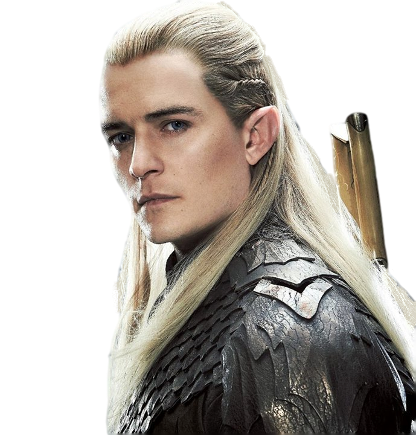
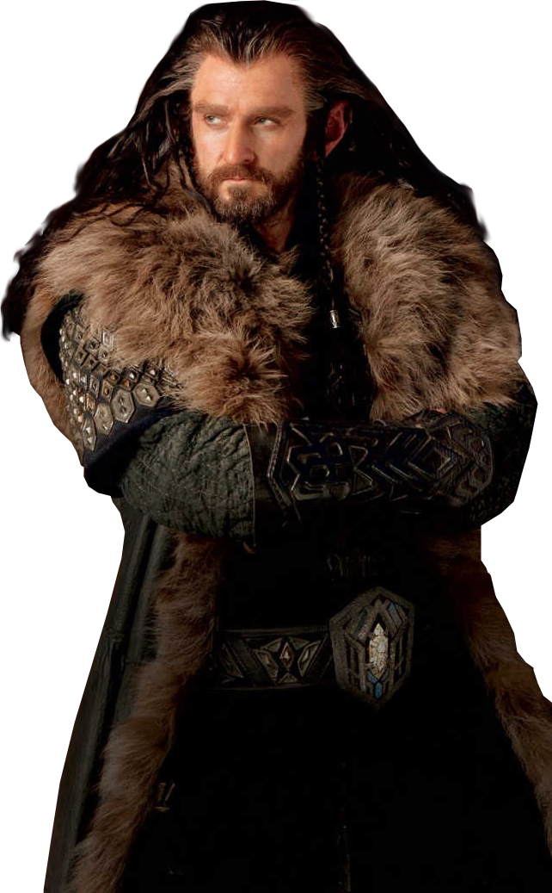

"Je vais jusqu'au bout, même si personne ne peut m'accompagner."
Biographies des Personnages

Frodon Sacquet - Incarné par Elijah Wood
Frodon Sacquet est un hobbit de la Comté qui se voit confier la tâche de détruire l'Anneau Unique.
Citation célébre
Alliances et Amis proches
- Sam Gamegie : Son jardinier et ami dévoué qui l'accompagne jusqu'au Mordor.
- Gandalf : Le guide et mentor qui l'aide à comprendre l'importance de sa quête.
- Aragorn, Legolas et Gimli : Membres de la Communauté qui lui offrent soutien et protection.
Rôle dans la quête de l'Anneau
Frodon hérite de l'Anneau Unique de son oncle Bilbon et accpete la dangereuse mission de le détruire. Sa bravoure, sa résistance et sa volonté d'aller au-delà de ses propres peurs font de lui le héros de cette quête.
Traits de Caractère
- Courageux et humble
- Dévoué et loyal
- Résilient face aux épreuves
Chronologie Personnelle
- Naissance : 22 septembre 2968 du Troisème Âge
- Acquisition de l'Anneau : En 3001, hérite de l'Anneau Unique
- Formation de la Communauté de l'Anneau : Début de quête en 3018
- Destruction de l'Anneau : Accomplissement de sa mission en 3019
Arme et Objet Spécifique
- Dard : Une épée elfique lumineuse qui lui est offerte par Bilbon, capable de détecter les Orques à proximité.
- Mithril : Armure légère, rare et précieuse, également cadeau de Bilbon.
Origines et Peuple
Originaire de la Comté, Frodon est un hobbit typique par sa taille, son amour pour la nature et sa vie simple. Sa destinée le conduit pourtant bien loin de son pays d'origine.
Anecdotes et Faits Divers
Frodon porte une cicatrice invisible laissée par la dague du Roi-Sorcier à Amon Sûl, une blessure qui le tourmente pendant de nombreuses années.
Évolution du Personnage
Au début de son voyage, Frodon est plein d'espoir et d'innocence, mais la charge de l'Anneau et les épreuves du Mordor le marquent profondément. Il finit par partir pour les Havres Gris, incapable de vivre en pais en Terre du Milieu après sa quête.

Sam - Incarné par Sean Astin
Sam est un hobbit de la Comté, fidèle jardinier et ami de Frodon, qui l'accompagne dans sa quête pour détruire l'Anneau Unique.
Citations célébres
"Je ne peux pas le porter pour vous, mais je peux vous porter, vous !"
"Il y a du bon en ce monde, Mr Frodon, et il faut se battre pour cela."
Alliances et Amis proches
- Frodon Sacquet : Son ami le plus proche, qu'il accompagne jusqu'au bout pour l'aider à détruire l'Anneau.
- Gandalf : Le magicien qui encourage son courage et son dévouement.
- Aragorn : Le chef de la Communauté qu'il respecte pour sa bravoure et son sens du devoir.
Rôle dans la quête de l'Anneau
Sam est le soutien le plus loyal et dévoué de Frodon, se chargeant des provisions, l'encouragent et le protégeant contre les dangers de la quête. Sans lui, Frodon aurait sans doute échoué dans sa mission.
Traits de Caractère
- Courageux
- Loyal
- Simple et humble
Chronologie Personnelle
- Naissance : Né dans la Comté, fils du jardinier Hamfast Gamegie.
- Début de la quête : Rejoint Frodon et la Communauté de l'Anneau pour protéger la Terre du Milieu.
- Montagne du Destin : Accompagne Frodon jusqu'au sommet pour accomplir leur mission.
- Retour dans la Comté : Après la quête, retourne chez lui et devient maire de Hobbitebourg.
Arme et Objet Spécifique
- Sting : Utilise temporairement l'épée "Dard" appartenant à Frodon.
- Élixir d'eau d'Elven : L'eau de Lórien, qui lui est d'un grand soutien dans les moments difficiles de la quête.
Origines et Peuple
Sam est un hobbit de la Comté, né dans une famille modeste de jardiniers. Les hobbits sont connus pour leur amour de la paix, de la nature, et de la simplicité.
Anecdotes et Faits Divers
- Relation avec Frodon : Sa loyauté envers Frodon a inspiré de nombreux récits et chansons dans la Terre du Milieu
- Admiration pour les Elfes : Sam est fasciné par le monde des Elfes, et rêve de les rencontrer.
Évolution du Personnage
De simple jardinier, Sam devient un héros humble qui joue un rôle essentiel dans la destruction de l'Anneau. Son courage et son dévouement pour Frodon lui valent le respect et l'admiration des peuples libres de la Terre du Milieu.

Bilbon Sacquet - Incarné par Martin Freeman
Bilbon Sacquet est un hobbit de la Comté qui part à l'aventure avec une compagnie de nains pour reprendre leur royaume et trésor volé par le dragon Smaug.
Citations célébres
"Je ne connais pas la moitié d'entre vous à moitié que je le voudrais, et j'aime moins de la moitié d'entre vous à moitié aussi bien que vous le méritiez."
"Je suis en retard, en retard pour une aventure !"
Alliances et Amis proches
- Thorin Ecu-de-Chêne : Chef de l'expédition des Nains pour reprendre Erebor ; Bilbon développe un respect et une amitié complexe avec lui.
- Gandalf : Le magicien qui l'invite à partir à l'aventure et devient son mentor.
- Elrond : Seigneur de Fondcombe qui aide Bilbon et la compagnie des Nains.
Rôle dans la quête d'Erebor
Bilbon devient le "cambrioleur" de l'expédition des Nains. Il surmonte ses peurs, afronte le dragon Smaug et récupère l'Arkenstone, jouant un rôle clé dans la reconquête d'Erebor.
Traits de Caractère
- Curieux et Intrépide
- Loyal et Honnête
- Intelligent et Malin
Chronologie Personnelle
- Naissance : Né dans la Comté, au sein de la famille Sacquet.
- Départ pour l'aventure : Rejoint les Nains et Gandalf pour reprendre Erebor.
- Rencontre avec Gollum : Dans les Monts Brumeux, il trouve l'Anneau et trompe Gollum en résolvant ses énigmes.
- Retour dans la Comté : De retour chez lui, il devient une légende et rédige ses mémoires.
Arme et Objet Spécifique
- Dard : Une petite épée elfique qu'il trouve en chemin et utilise pour se défendre.
- Anneau Unique : Il trouve l'anneau dans la grotte de Gollum, ignorant son puvoir maléfique.
Origines et Peuple
Bilbon est un hobbit de la comté, issu de la famille Sacquet. Les hobbits sont connus pour leur amour du confort et des plaisirs simples.
Anecdotes et Faits Divers
- Premier hobbit aventurier : Bilbon est l'un des premiers hobbits à s'aventurer loin de la Comté, brisant les conventions de son peuple.
- Respect des Elfes : Il devient un invité de choix à Fondcombe, où il passe ses dernières années entouré des Elfes.
Évolution du Personnage
De hobbit sédentaire et prudent, Bilbon devient un aventurier courageux et respecté. Il gagne en sagesse et en expérience, et son aventure change profondément sa perception du monde et des autres peuples de la Terre du Milieu.

Gandalf le Gris - Incarné par Ian McKellen
Gandalf est un puissant sorcier qui guide et conseille la Communauté de l'Anneau.
Citations célébres
"Un magicien n'est jamais en retard, ni en avance d'ailleurs. Il arrive précisément à l'heure prévue."
"Tout ce que nous avons à décider, c'est ce que nous devons faire du temps qui nous est imparti."
"Vous ne passerez pas !"
Alliances et Amis proches
- Bilbon Sacquet : Leur amitié se développe lors de la quête d'Erebor, où Gandalf voit en lui un potentiel insoupçonné.
- Frodon Sacquet : Gandalf guide et conseille Frodon dans sa mission de détruire l'Anneau Unique.
- Aragorn : Allié de donfiance, Gandalf soutient Aragorn dans sa quête pour devenir roi.
- Saruman : Autrefois son mentor et chef du Conseil Blanc, leur relation s'effondre quand Saruman rejoint Sauron.
Rôle dans la quête d'Erebor
Gandalf identifie le danger que représente l'Anneau Unique et met en place la Communauté de l'Anneau pour le détruire. Il devient un guide pour Frodon et ses amis, affrontant de nombreux dangers et sacrifiant même sa vie dans les Mines de la Moria pour les protéger.
Traits de Caractère
- Sage et Perspicace
- Courageux et Dévoué
- Patient et Bienveillant
Chronologie Personnelle
- Arrivée en Terre du Milieu : Envoyé par les Valar pour contrer Sauron.
- Quête d'Erebor : Guide les Nains et Bilbon jusqu'à la Montagne Solitaire.
- Quête de l'Anneau : Joue un rôle central dans la découverte de l'Anneau et la formation de la Communauté.
- Renaissance en Gandalf le Blanc : Après sa bataille avec le Balrog, il revient avec des pouvoirs renforcés.
Arme et Objet Spécifique
- Glamring : Épée elfique qu'il obtient lors de la quête d'Erebor.
- Bâton de Magicien : Symbole de son pouvoir et de son rôle d'Istari (sorcier envoyé par les Valar).
Origines et Peuple
Gandalf est un Maia, un esprit ancien envoyé par les Valar pour protéger la Terre du Milieu contre Sauron. Sous sa forme humaine, il fait partie des Istari, un groupe de magiciens.
Anecdotes et Faits Divers
- Ami des Aigles : Gandalf est respecté par les Aigles Géants, qui l'aident à plusieurs reprises.
- Doyen des Hobbits : Sa proximité avec les hobbits est unique parmi les Istari, car il voit en eux un potentiel important pour changer l'histoire de la Terre du Milieu.
Évolution du Personnage
Gandalf passe de Gandalf le Gris à Gandalf le Blanc après sa victoire contre le Balrog. Ce changement marque une transformation de ses pouvoirs et de son autorité. Toujours sage et bienveillant, il devient plus résolu et intransigeant dans sa lutte contre les forces du Mal.

Aragorn - Incarné par Viggo Mortensen
Aragorn est un rôdeur du Nord, héritier de Gondor, qui joue un rôle crucial dans la lutte contre Sauron.
Citations célébres
"Je ne peux pas choisir le chemin qui m'a été tracé, mais je peux le suivre avec courage."
"Il est une autre voie... par le Gouffre de Helm."
"Je ne vous dirai pas de ne pas pleurer, car toutes les larmes ne sont pas un mal."
Alliances et Amis proches
- Gandalf : Un ami et conseiller de confiance, Gandalf inspire Aragorn dans sa mission.
- Frodon Sacquet : Protecteur de Frodon, il lui prête son soutien et le protège lors de la quête de l'Anneau.
- Legolas et Gimli : Partenaires de comabt et amis loyaux, ils forment un trio inséparable lors de la guerre contre Sauron.
- Arwen : Son grand amour, qui renonce à son immortalité pour être à ses côtés.
Rôle dans la quête d'Erebor
Héritier du trône de Gondor, Aragorn lutte pour restaurer paix et l'unité des peuples libres. Il mène la Communauté de l'Anneau aux côtés de Gandalf, puis prend la tête des armées de Gondor et de Rohan pour défier Sauron et aider Frodon à accomplir sa mission.
Traits de Caractère
- Courageux et Héroïque
- Humble et Dévoué
- Juste et Stratégique
Chronologie Personnelle
- Jeunesse : Caché à Fondcombe pour échapper aux ennemis de son père, il est élevé par Elrond.
- Rôdeur : Il passe des années en tant que Rôdeur du Nord, protégeant les frontières de la Terre du Milieu.
- Quête de l'Anneau : Intègre la Communauté de l'Anneau et devient un leader de l'Alliance des Hommes.
- Couronnement : Après la chute de Sauron, il est couronné roi du Gondor et d'Arnor.
Arme et Objet Spécifique
- Andúril : Épée reforgée à partir des fragments de Narsil, symbole de son héritage royal.
- Anneau de Barahir : Héritage de sa lignée, représentant son droit de naissance en tant que descendant d'Isildur.
Origines et Peuple
Aragorn est un Dúnedain, membre du peuple des Hommes du Nord. Héritier d'Isildur, il est destiné à régner sur le Gondor et l'Arnor, les deux grands royaumes des Hommes.
Anecdotes et Faits Divers
- Rôdeur sous le nom de Thorongil : Avant les événements du Seigneur des Anneaux, Aragorn a servi sous ce nom pour protéger des peuples et se forger une réputation.
- Relation avec Arwen : Leur amour est marqué par un sacrifice mutuel, Arwen renonçant à son immortalité pour être avec lui.
Évolution du Personnage
Aragorn passe de Rôdeur errant à Roi du Gondor, assumant progressivement son rôle et sa responsabilité envers son peuple. Il gagne en assurance et accepte son destin, incarnant l'idéal du roi noble, juste et courageux.

Legolas - Incarné par Orlando Bloom
Legolas est un elfe de la Forêt Noire, expert en tir à l'arc, qui rejoint la Communauté de l'Anneau pour détruire l'Anneau Unique.
Citations célébres
"Un soleil rouge se lève. Beaucoup de sang a dû couler cette nuit."
"Ils courent comme des chasseurs."
"Pour la Comté ! Pour Frodon !."
Alliances et Amis proches
- Gimli : Bien que les nains et les elfes soient souvent en désaccord, Legolas et Gimli développent une amitié improbable et profonde.
- Aragorn : Il suit Aragorn avec loyauté, respectant son leadership et combattant à ses côtés.
- Frodon : Comme membre de la Communauté de l'Anneau, Legolas veille sur Frodon et l'aide dans sa quête.
Rôle dans la quête d'Erebor
En tant que membre de la Communauté, Legolas apporte ses compétences d'archer et son agilité elfique pour défendre le groupe. Il lutte contre les armées de Sauron et soutient la mission de Frodon jusqu'au bout.
Traits de Caractère
- Agile et Perceptif
- Loyal et Courageux
- Amical et Ouvert d'Esprit
Chronologie Personnelle
- Origines elfiques : Fils de Thranduil, roi des Elfes de la Forêt Noire, il grandit dans un environnement empreint de magie et d'anciens savoirs.
- Rencontre avec la Communauté : Il rejoint la Communauté de l'Anneau à Fondcombe, où il s'engage à défendre Frodon.
- Guerre contre Sauron : Combat aux côtés d'Aragorn et Gimli, notamment lors des batailles du Gouffre de Helm et des Champs du Pelennor.
Arme et Objet Spécifique
- Arc elfique : Son arme de prédilection, un arc gracieux et puissant qui fait de lui un tireur hors pair.
- Couteau de combat : En plus de son arc, il manie des couteaux elfiques pour le combat rapproché.
Origines et Peuple
Legolas est un elfe sylvain de la Forêt Noire, membre d'un peuple ancien et protecteur de la nature. Son père Thranduil règne sur ce royaume elfique.
Anecdotes et Faits Divers
- Compétition avec Gimli : Legolas et Gimli se lancent souvent des des défis amicaux pour compter leurs victoires au combat.
- Vision perçante : Il est capable de repérer des détails éloignés, ce qui aide souvent la Communauté de l'Anneau dans ses déplacements.
Évolution du Personnage
Legolas montre une évolution notable dans ses relations avec les autres races, développant une profonde amitié avec Gimli et un respect sincère pour les Humains. Sa loyauté et son ouverture d'esprit lui permettent de surmonter les préjugés et de lutter pour l'unité de la Terre du Milieu.

Arwen - Incarnée par Liv Tyler
Arwen est une elfe de Fondcombe, fille d'Elrond, qui renonce à son immortalité pour épouser Aragorn et soutenir la lutte contre Sauron.
Citation célébre
"Je préfère vivre une vie mortelle à tes côtés que d'affronter tous les âges du monde seule."
"Si tu choisis une vie mortelle, je t'aimerais jusqu'à la fin de mes jours."
Alliances et Amis proches
- Aragorn : Son grand amour, pour qui elle renonce à son immortalité.
- Elrond : Son père, qui tente de la convaincre de quitter la Terre du Milieu pour préserver sa vie éternelle.
- Les Elfes de Lothlórien : Sa famille élargie et son peuple.
Rôle dans la quête de l'Anneau
Arwen joue un rôle de soutien moral, inspirant Aragorn dans sa lutte contre Sauron. Elle sauve également Frodon en le transportant à Fondcombe pour le guérir après sa blessure par le Roi-Sorcier.
Traits de Caractère
- Gracieuse et Courageuse
- Dévouée à ses proches
- Résiliente face aux défis émotionnels
Chronologie Personnelle
- Naissance : T.A. 241, fille d'Elrond et de Celebrían.
- Rencontre avec Aragorn : T.A. 2951, à Fondcombe.
- Mariage avec Aragorn : T.A. 3019, après la chute de Sauron.
- Mort : F.A. 121, à Cerin Amroth, Lothlórien.
Arme et Objet Spécifique
Elle ne porte pas d'arme mais son pendentif, l'Étoile du Soir, symbolise son amour pour Aragorn et son sacrifice.
Origines et Peuple
Arwen est une Elfe de la lignée royale, petite-fille de Galadriel et descendante de Lúthien, héritant de la beauté légendaire de son aïeule.
Anecdotes et Faits Divers
- Son amour pour Aragorn est souvent comparé à celui de Lúthien et Beren, une histoire d'amour similaire entre une Elfe et un humain.
- Dans les films, son rôle est amplifié, notamment avec la scène où elle sauve Frodon.
Évolution du Personnage
Arwen passe de la contemplation tranquille à un engagement actif, acceptant une vie mortelle par amour. Sa décision incarne le sacrifice et la force intérieure.

Gollum - Incarné par Andy Serkis
Gollum est une créature corrompue par l'Anneau Unique, qui guide Frodon et Sam vers le Mont Destin tout en cherchant à récupérer l'Anneau pour lui-même.
Citation célébre
"Mon précieux... Ils l'ont volé, ils l'ont volé, mon précieux !"
Alliances et Amis proches
- Frodon : Une relation ambiguë entre amitié et manipulation.
- Sam : Méfiance mutuelle, souvent conflictuelle.
- L'Anneau Unique : Son obsession et sa seule véritable "alliance".
Rôle dans la quête de l'Anneau
Gollum est à la fois un guide et un obstacle. Il mène Frodon et Sam au Mordor tout en cherchant à récupérer l'Anneau, jouant un rôle décisif dans sa destruction en tombant avec lui dans les flammes du Mont Destin.
Traits de Caractère
- Rusé et Manipulateur
- Tourmenté entre le bien (Sméagol) et le mal (Gollum)
- Obsédé par l'Anneau, ce qui dicte toutes ses actions
Chronologie Personnelle
- Naissance : Vers T.A. 2430, sous le nom de Sméagol, parmi les riverains du Val d'Anduin.
- Découverte de l'Anneau : T.A. 2463, lorsqu'il tue son cousin Déagol pour le posséder.
- Transformation en Gollum : Plusieurs siècles d'isolement dans les montagnes.
- Rencontre avec Frodon et Sam : T.A. 3019, il devient leur guide vers le Mordor.
- Mort : T.A. 3019, tombe dans la lave du Mont Destin avec l'Anneau.
Arme et Objet Spécifique
Il utilise principalement sa ruse et ses mains pour attaquer.
L'Anneau Unique est à la fois son objet de pouvoir et de malédiction.
Origines et Peuple
Gollum était à l'origine un hobbit du peuple des riverains, vivant près de l'Anduin. L'Anneau l'a transformé en une créature méconnaissable.
Anecdotes et Faits Divers
- Sa double personnalité, Sméagol (le bon) et Gollum (le mauvais), représente le conflit intérieur causé par l'Anneau.
- C'est à cause de sa perte de l'Anneau que Frodon et la Communauté peuvent l'utiliser pour leur quête.
Évolution du Personnage
Gollum commence comme une créature vile et obsédée, mais son lien avec Frodon laisse entrevoir des éclairs de son ancienne personnalité. Cependant, son obsession pour l'Anneau finit par causer sa perte et la destruction de ce dernier.

Thorin - Incarné par Richard Armitage
Thorin est un nain du peuple de Durin, qui se voit confier la tâche de reconquérir Erebor et son trésor des griffes du dragon Smaug.
Citation célébre
"Si plus de gens accordaient de la valeur à la maison et à l'amour plutôt qu'à l'or, le monde serait un endroit plus heureux."
Alliances et Amis proches
- Fili et Kili : Ses neveux et compagnons les plus proches.
- Bilbon : Un ami improbable et un allié précieux.
- La Compagnie des Nains : Ses camarades dévoués dans la quête de reprendre Erebor.
Rôle dans la quête de l'Anneau
Bien qu'il ne soit pas directement impliqué dans la quête de l'Anneau, Thorin joue un rôle clé dans les événements précédant cette quête, en rassemblant la Compagnie pour récupérer Erebor, ce qui affaiblit Smaug et modifie l'équilibre des forces en Terre du Milieu.
Traits de Caractère
- Fier et Déterminé
- Courageux mais parfois entêté
- Susceptible à l'avidité, notamment envers l'Arkenstone
Chronologie Personnelle
- Naissance : T.A. 2746, à Erebor, avant l'arrivée de Smaug.
- Exil des Nains : Après l'attaque de Smaug, il devient un leader en exil.
- Quête pour Erebor : En T.A. 2941, il conduit la Compagnie des Nains.
- Mort : Décède à la Bataille des Cinq Armées en 2941.
Arme et Objet Spécifique
Orcrist : Une épée elfique redoutable qu'il trouve dans une cachette de trolls.
Arkenstone : Un symbole de sa lignée royale et de son obsession.
Origines et Peuple
Thorin est un prince nain de la lignée de Durin, héritier du trône d'Erebor. Il représente la fierté et la résilience des Nains.
Anecdotes et Faits Divers
- Il porte le surnom de "Thorin Écu-de-Chêne", en référence à un morceau de bois qu'il utilisa comme bouclier lors d'une bataille.
- Sa quête est motivée par un profond désir de restaurer la gloire de son peuple et de récupérer son royaume perdu.
Évolution du Personnage
Thorin commence comme un leader noble mais est progressivement corrompu par obsession pour l'or et l'Arkenstone. Cependant, sur son lit de mort, il trouve la rédemption et reconnaît la valeur de l'amitié et de la paix.

Kili - Incarné par Aidan Turner
Kili est un jeune nain courageux qui rejoint la quête de son oncle Thorin pour reconquérir Erebor et son trésor.
Citation célébre
"Je suivrai Thorin, même jusqu'à la mort."
Alliances et Amis proches
- Thorin : Son oncle et roi, pour qui il est profondément loyal.
- Fili : son frère aîné et compagnon inséparable.
- Tauriel : Une Elfe avec qui il développe une relation affectueuse et improbable.
Rôle dans la quête de l'Anneau
Kili n'est pas directement impliqué dans la quête de l'Anneau, mais il joue un rôle crucial dans la quête pour reprendre Erebor, aidant à affaiblir Smaug, ce qui influe sur les événements ultérieurs en Terre du Milieu.
Traits de Caractère
- Brave et Impulsif
- Curieux et Ouvert d'esprit
- Fidèle et protecteur envers ceux qu'il aime
Chronologie Personnelle
- Naissance : T.A. 2864, dans l'exil des Nains après la chute d'Erebor.
- Quête pour Erebor : Participe à l'expédition menée par Thorin en T.A. 2941.
- Mort : Tombe héroïquement à la Bataille des Cinq Armées en 2941.
Arme et Objet Spécifique
Arc et flèches : Kili se distingue par ses talents d'archer, rares parmi les Nains.
Epée courte : Utilisée au combat rapproché.
Origines et Peuple
Kili est un prince Nain, issu de la lignée de Durin. Jeune et fougueux, il incarne l'espoir et la volonté de son peuple de restaurer leur gloire passée.
Anecdotes et Faits Divers
- Kili est le plus jeune membre de la Compagnie des Nains et représente une nouvelle génération plus ouverte.
- Sa romance avec Tauriel, bien qu'inédite dans les livres, ajoute une dimension tragique et émotionnelle à son histoire.
Évolution du Personnage
Au début, Kili est un jeune Nain insouciant et plein d'énergie, mais la quête pour Erebor le pousse à prouver son courage et sa loyauté. Sa mort héroïque aux côtés de son frère Fili soulinge son dévouement à sa famille et à sa cause.

Galadriel - Incarnée par Cate Blanchett
Galadriel est une elfe de Lothlórien, dotée d'une grande sagesse et de pouvoirs magiques, qui aide la Communauté de l'Anneau dans leur quête.

Tauriel - Incarnée par Evangeline Lilly
Tauriel est une elfe sylvestre, capitaine des gardes de la Forêt Noire, qui se distingue par son courage et son attachement à Kili, l'un des nains.
Sauron - Incarné par Sala Baker
Sauron est un seigneur des ténèbres qui forge l'Anneau Unique pour dominer la Terre du Milieu et cherche à le récupérer pour restaurer son pouvoir.
Gimli - Incarné par John Rhys-Davies
Gimli est un nain de la lignée de Durin qui rejoint la Communauté de l'Anneau, combattant avec loyauté et forgeant une amitié improbable avec l'elfe Legolas.

Éowyn - Incarnée par Miranda Otto
Éowyn est une noble du Rohan, déterminée et courageuse, qui se déguise en homme pour combattre au côté des siens et vaincre le Roi-Sorcier d'Angmar.
Site Web fait par Tiphaine Chapuis - Ecole Ada Tech School